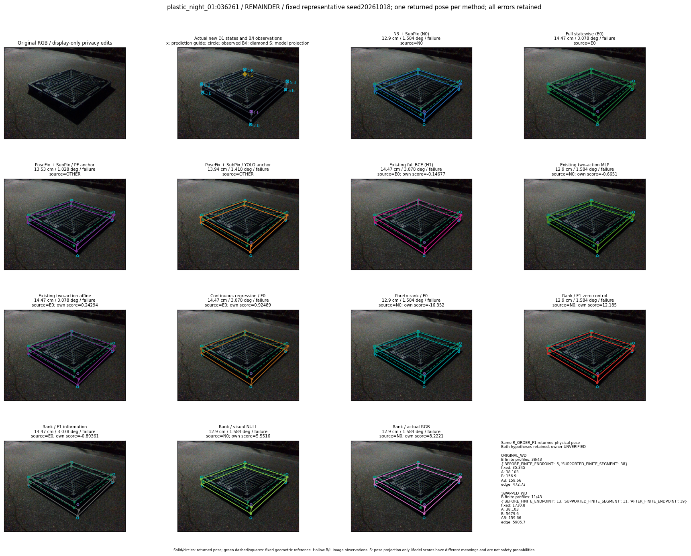
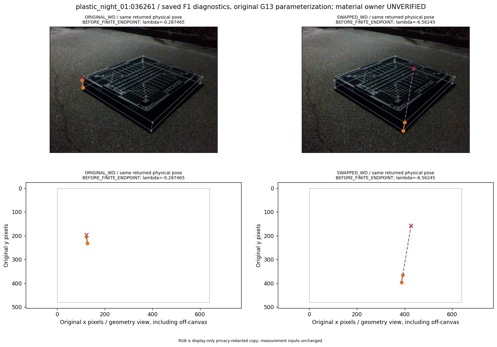
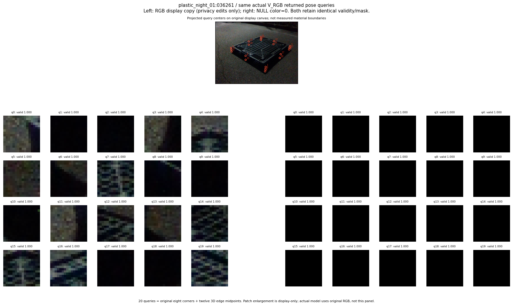

R_ORDER_F1_s20261018:fixed_full_failure41_max_T_worsening
thumbnail detail support visual



실선은 반환 자세, 초록 점선은 고정 기하 참조입니다. S는 영상 관측이 아닙니다. 점수는 모델별 의미가 다르며 보정된 안전 확률이 아닙니다. 개인정보 처리는 표시 사본에만 적용했습니다.
| 방법·seed | 위치 / 회전 / 공동성공 | 실제 출처 | 선택 후보 | 각 모델 자체 점수 |
|---|---|---|---|---|
| N0 | 12.9 cm / 1.584 deg / failure | N0 | N/A | N/A |
| E0 | 14.47 cm / 3.078 deg / failure | E0 | N/A | N/A |
| E0_REGENERATED | 14.47 cm / 3.078 deg / failure | E0 | E0_REGENERATED | N/A |
| POSEFIX_SUBPIX_PF_ANCHOR | 13.53 cm / 1.028 deg / failure | OTHER | N/A | N/A |
| POSEFIX_SUBPIX_YOLO_ANCHOR | 13.94 cm / 1.418 deg / failure | OTHER | N/A | N/A |
| D1_H1_MLP_s20261018 | 14.47 cm / 3.078 deg / failure | E0 | E0_REGENERATED | -0.14677073061466217 |
| D1_H1_MLP_s20261019 | 14.47 cm / 3.078 deg / failure | E0 | E0_REGENERATED | -0.04616517201066017 |
| D1_H1_MLP_s20261020 | 14.47 cm / 3.078 deg / failure | E0 | E0_REGENERATED | -1.9538573026657104 |
| D1_H1_PAIR_MLP_s20261018 | 12.9 cm / 1.584 deg / failure | N0 | N0 | -0.6650959849357605 |
| D1_H1_PAIR_MLP_s20261019 | 12.9 cm / 1.584 deg / failure | N0 | N0 | -0.7933064103126526 |
| D1_H1_PAIR_MLP_s20261020 | 14.47 cm / 3.078 deg / failure | E0 | E0_REGENERATED | -1.686324954032898 |
| D1_H1_PAIR_ROLE_AFFINE_s20261018 | 14.47 cm / 3.078 deg / failure | E0 | E0_REGENERATED | 0.2429378777742386 |
| D1_H1_PAIR_ROLE_AFFINE_s20261019 | 14.47 cm / 3.078 deg / failure | E0 | E0_REGENERATED | 0.38498786091804504 |
| D1_H1_PAIR_ROLE_AFFINE_s20261020 | 14.47 cm / 3.078 deg / failure | E0 | E0_REGENERATED | 0.39596426486968994 |
| R_CONT_F0_s20261018 | 14.47 cm / 3.078 deg / failure | E0 | E0_REGENERATED | 0.9248905181884766 |
| R_CONT_F0_s20261019 | 14.47 cm / 3.078 deg / failure | E0 | E0_REGENERATED | 0.9595765471458435 |
| R_CONT_F0_s20261020 | 14.47 cm / 3.078 deg / failure | E0 | E0_REGENERATED | 1.063647985458374 |
| R_ORDER_F0_s20261018 | 12.9 cm / 1.584 deg / failure | N0 | N0 | -16.352136611938477 |
| R_ORDER_F0_s20261019 | 14.47 cm / 3.078 deg / failure | E0 | E0_REGENERATED | -8.238042831420898 |
| R_ORDER_F0_s20261020 | 14.47 cm / 3.078 deg / failure | E0 | E0_REGENERATED | 2.3020689487457275 |
| R_ORDER_F1_ZERO_s20261018 | 12.9 cm / 1.584 deg / failure | N0 | N0 | 12.184754371643066 |
| R_ORDER_F1_ZERO_s20261019 | 14.47 cm / 3.078 deg / failure | E0 | E0_REGENERATED | 4.533860683441162 |
| R_ORDER_F1_ZERO_s20261020 | 14.47 cm / 3.078 deg / failure | E0 | E0_REGENERATED | 3.062368392944336 |
| R_ORDER_F1_s20261018 | 14.47 cm / 3.078 deg / failure | E0 | E0_REGENERATED | -0.8936111330986023 |
| R_ORDER_F1_s20261019 | 12.9 cm / 1.584 deg / failure | N0 | N0 | 5.309639930725098 |
| R_ORDER_F1_s20261020 | 14.47 cm / 3.078 deg / failure | E0 | E0_REGENERATED | 1.3795660734176636 |
| V_ORDER_NULL_s20261018 | 12.9 cm / 1.584 deg / failure | N0 | N0 | 5.5516133308410645 |
| V_ORDER_NULL_s20261019 | 12.9 cm / 1.584 deg / failure | N0 | N0 | 1.7867074012756348 |
| V_ORDER_NULL_s20261020 | 12.9 cm / 1.584 deg / failure | N0 | N0 | -1.9607216119766235 |
| V_ORDER_RGB_s20261018 | 12.9 cm / 1.584 deg / failure | N0 | N0 | 8.222113609313965 |
| V_ORDER_RGB_s20261019 | 12.9 cm / 1.584 deg / failure | N0 | N0 | 1.0313305854797363 |
| V_ORDER_RGB_s20261020 | 12.9 cm / 1.584 deg / failure | N0 | N0 | -6.488621234893799 |